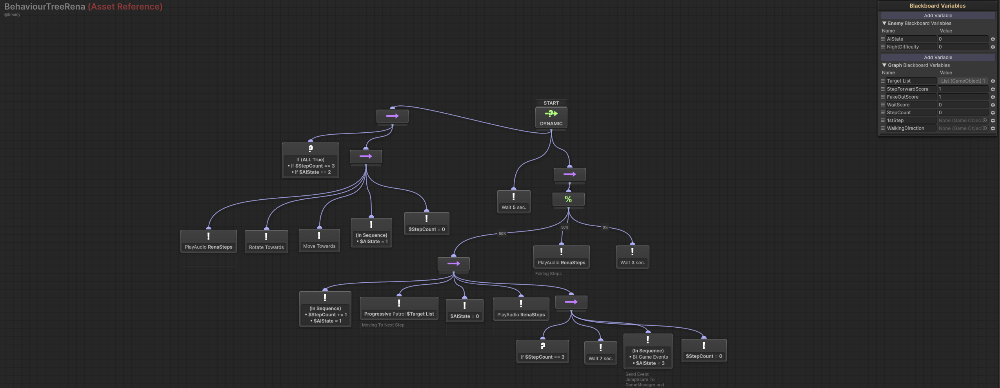

A FNAF-style horror game with a twisted Christmas theme — survive the night while Satan, a corrupted reindeer, imps, a snowman, and a cursed teddy bear hunt you. Built for Christmas Miracle Horror Jam, with enemy AI split across a Behavior Tree, Utility AI, and Director AI instead of one system doing everything.
The build on itch.io is the version the team shipped at the end of the jam. The Director pacing, Utility AI scoring, and the event-bridge fix described below were built afterward, in my own fork, after the rest of the team moved on — that's the code this case study is actually about, not the itch.io build.
Satan's Miracle is a first-person survival horror game in the Five Nights at Freddy's mould, wrapped in a dark Christmas theme: trapped on a night that was supposed to be magical, the player has to survive until morning while being hunted by corrupted holiday creatures — Satan, a reindeer, imps, a snowman, and a cursed teddy bear. Limited resources, reading enemy patterns, and reacting fast are the whole game; one mistake is fatal.
Satan's Miracle was built with a team of five for the jam. After the jam ended, the rest of the team moved on to other things and the project stalled — but the AI was my part, and I kept working on it until it was actually finished rather than leaving it at jam-quality. The Behavior Tree, Utility AI, and Director AI layers described below are the result of that follow-through, not just the 48-hour jam version.
A FNAF-style game lives or dies on enemies that feel like they're actually hunting you, not running a fixed script. With five distinct creatures to drive and a one-week jam clock running, the AI couldn't be hand-scripted per enemy — it needed a structure that could support different behaviour without every enemy being its own one-off system.
On top of that, the AI couldn't live in isolation: it needed to tell the rest of the game when something important happened — the player got caught in a flashlight beam, an enemy reached its final step — without the Behavior Tree being hard-wired to specific scripts like the GameManager or AudioManager.
I split the AI into three layers instead of one. The Behavior Tree, built in NodeCanvas, handles moment-to-moment execution — patrol, advance, retreat, attack. Utility AI sits above it, scoring which action actually makes sense right now instead of the tree following a fixed priority order. Director AI sits above that again, ramping difficulty across the whole night rather than per enemy, so the game gets tenser over time instead of every encounter feeling the same. Below is the actual chain, end to end, with the real code behind each step.
The flashlight doesn't go through any event system — it raycasts forward every frame, and if it hits an enemy's collider, it calls a method on that enemy directly. Tight coupling here is the right call: there's only ever one flashlight and the specific enemy it's pointing at, so an event bus would just add indirection for no benefit.
// LuzSegueMouseSimples.cs — the flashlight
if (flashLight.enabled)
{
if (Physics.Raycast(flashLight.transform.position, flashLight.transform.forward,
out RaycastHit hit, 10f))
{
if (hit.collider.GetComponent<EnemyAI>() != null)
{
EnemyAI enemy = hit.collider.GetComponent<EnemyAI>();
enemy.OnFlashed();
}
}
}
// EnemyAI.cs — the enemy being caught
public void OnFlashed()
{
flashed?.Invoke();
_blackboard.SetValue("AIState", 2); // Retreat
}
The Behavior Tree never "hears" the flash as an event — it just checks
AIState == 2 on the Blackboard, which is always correct no matter which
branch the tree happens to be evaluating that frame. Blackboard state over event
listeners was a deliberate choice after running into a real lifecycle issue earlier in
development: NodeCanvas's event-listener condition nodes only subscribe while that
exact branch is being actively ticked, so an event could fire while the tree was
elsewhere and simply be missed. Polling a Blackboard value sidesteps that entirely.
Once a frame, the Director ramps a difficulty multiplier up over an 8-minute night and writes it into every enemy's Blackboard — throttled to roughly every 1.5 seconds so it's not recalculating constantly for no reason.
// Director.cs
float time = Mathf.Clamp((_currentGameTime / _gameTime), 0, 1); // _gameTime = 480s
_gameTimeMultiplier = _nightDifficulty + Mathf.Lerp(0.2f, 2.2f, time);
foreach (var bb in _aiBlackboards)
{
bb.SetValue("NightDifficulty", _nightDifficulty);
bb.SetValue("GameTimeMultiplier", _gameTimeMultiplier);
}Each enemy then scores its own options using the Director's numbers — how aggressively to advance, how likely to fake a step, how likely to just wait — and writes those scores back onto the Blackboard the Behavior Tree reads from.
// UtilityAI.cs
float stepForwardScore = _baseAggression * GameTimeMultiplier * (step + 1);
float fakeOutScore = (1 - nightDifficulty) * Random.Range(0.5f, 1.2f);
float waitScore = Random.Range(0.1f, 0.3f);
enemy.graph.blackboard.SetVariableValue("StepForwardScore", stepForwardScore);
enemy.graph.blackboard.SetVariableValue("FakeOutScore", fakeOutScore);
enemy.graph.blackboard.SetVariableValue("WaitScore", waitScore);
Those three variables are exactly what the tree's weighted-random selector reads from —
visible live on the Blackboard panel below as StepForwardScore,
FakeOutScore, and WaitScore. Early in the night, advancing
barely outweighs faking it; later, as GameTimeMultiplier climbs, advancing
dominates and the enemy gets noticeably more aggressive — without a single "if it's late
in the night, be more aggressive" line anywhere. That behaviour falls out of the scoring
on its own.

StepForwardScore,
FakeOutScore, and WaitScore are the values Utility AI writes
every ~1.5 seconds, which the tree's weighted selector reads to choose a branch.
When an enemy reaches its final step and holds it, a custom NodeCanvas task I wrote fires a named event out of the tree, through a small event router, to whichever script cares.
// BtGameEvents.cs — custom NodeCanvas ActionTask
public class BtGameEvents : ActionTask
{
public BBParameter<string> eventName;
protected override void OnExecute()
{
GameEvents.OnGameEvent(eventName.value, agent.gameObject);
EndAction();
}
}
// GameEvents.cs — the router
public static class GameEvents
{
static readonly Dictionary<string, Action<GameObject>> listeners = new();
public static void Subscribe(string eventName, Action<GameObject> handler) =>
listeners[eventName] = listeners.TryGetValue(eventName, out var h) ? h + handler : handler;
public static void OnGameEvent(string eventName, GameObject source) =>
listeners.TryGetValue(eventName, out var handler) ? handler?.Invoke(source) : null;
}
// GameManager.cs — the listener
void OnEnable() => GameEvents.Subscribe("JumpScare", HandleJumpScareEvent);
void HandleJumpScareEvent(GameObject source)
{
// teleport enemy into the jumpscare position, disable its AI/collider,
// then reload the scene after a beat
}The tree never references GameManager directly — it just names an event. Any script can subscribe to "JumpScare" without the Behavior Tree or any existing listener needing to change at all.
Five different enemies share one architecture instead of five separate systems. The Director's pacing and the Utility scoring mean the game gets harder over a session without any enemy-specific difficulty code, and the game-over sequence plugs in through a named event instead of a hard reference. The game is live and downloadable on itch.io.
BtGameEvents) and a small event router so the tree can trigger game-over without referencing GameManager directlyNodeCanvas Behavior Trees, Utility AI scoring driven by a time-based Director system, Blackboard-based state over event listeners where polling is more reliable, a custom ActionTask bridging the tree to a lightweight event router, and debugging a real NodeCanvas node-lifecycle issue.